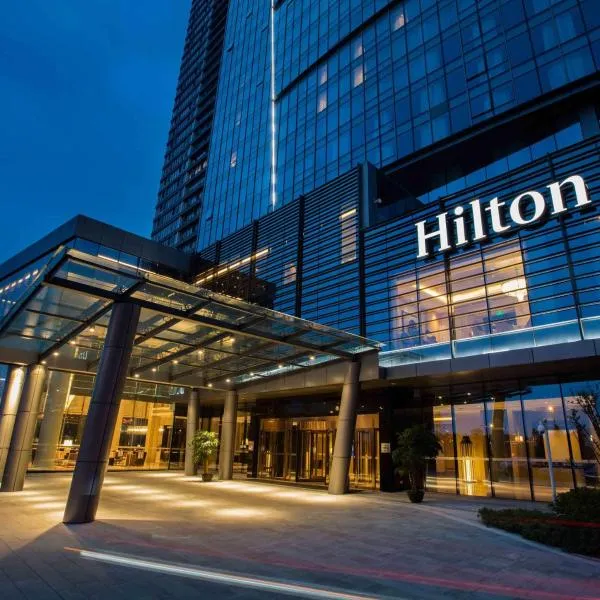
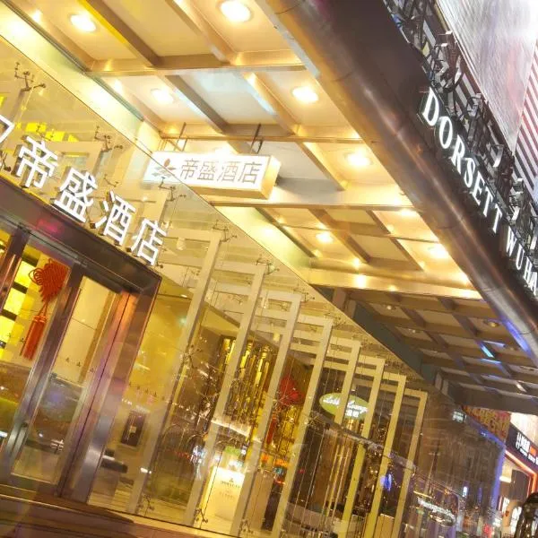
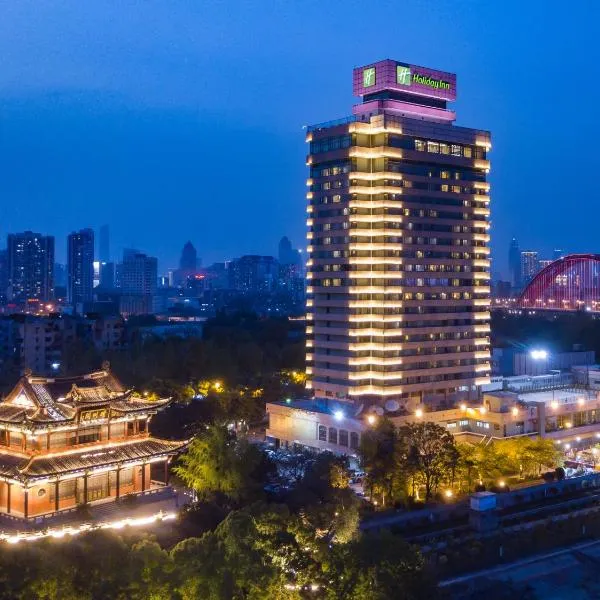
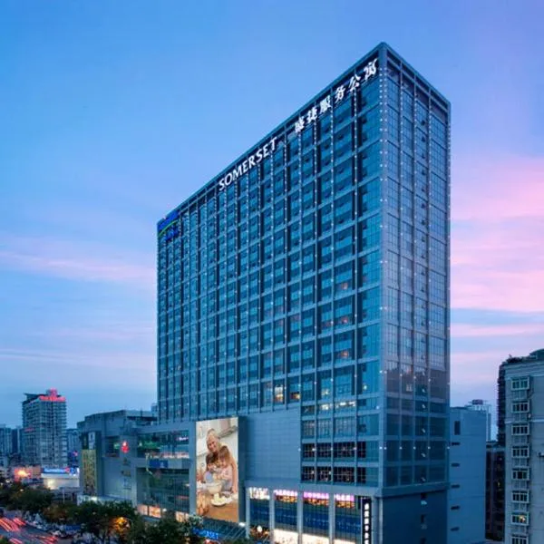

Wuhan Hilton Hotel
Wuhan Hilton Hotel - Located in Hanyang District, Wuhan, with a stunning view of the Yangtze River, it is a 12 minute walk from Guiyuan Temple, 4.9 kilometers from Wuhan International Convention and Exhibition Center, and 5.3 kilometers from Zhongshan Park Station. This accommodation is about 5.5 kilometers away from Wuhan Yangtze River Bridge, 5.6 kilometers away from Wuhan International Expo Center, and 5.6 kilometers away from Zhongshan Park. This hotel has an indoor swimming pool, hot tub, and children's club. This hotel offers buffet or continental breakfast. The restaurant at Wuhan Shimao Hilton Hotel - Yangtze River View specializes in Cantonese, Chinese, and Italian cuisine.
Wuhan Dorsett Hotel
Hotel is located in the bustling center of Jianghan Road, providing modern rooms with free cable network connection and flat screen TV, equipped with a fitness center and a complete set of business facilities. Wuhan Desheng Hotel is located in the commercial district of Hankou, only 100 meters away from New World Plaza. It is less than a 10 minute walk from Xunlimen Station on Line 1, Jianghan Road Station on Line 2 and Line 6, 15 minutes by car from Huanghelou, and 20 minutes by car from Wuchang Railway Station and Hankou Railway Station.
Wuhan Qingchuan Holiday Hotel
The 20 story Wuhan Qingchuan Holiday Hotel enjoys a beautiful view of the Yangtze River, with a fitness center, sauna, and massage services. The hotel is located in the center of Hubei Province, with 3 restaurants and 2 bars, as well as 24-hour room service and free parking. The Wuhan Qingchuan Holiday Hotel is only a few steps away from the Ming Dynasty Qingchuan Pavilion and the First Bridge of the Yangtze River, 8 kilometers away from the Wuhan International Convention and Exhibition Center, 30 minutes by car from the Thousand Lakes Province, and 35 kilometers away from Wuhan Tianhe International Airport.
Wuhan Shengjie Wusheng Service Apartment
Wuhan Shengjie Wusheng Service Apartment is located in the business center of Qiaokou District, providing spacious self-service apartments. The apartment has a children's playground, fitness center, and fitness center. Wuhan Shengjie Wusheng Service Apartment is a 7-minute drive from Zhongshan Park and Wuhan International Convention and Exhibition Center, 2.8 kilometers from Jianghan Road Pedestrian Street, and 6.3 kilometers from Hankou Railway Station. All rooms are equipped with free wired internet connection, ironing facilities, washing machines, and a flat screen TV. The fully equipped kitchen is equipped with a microwave, mini bar, kitchen utensils, and stove. The guest room also has a connected bathroom with a bathtub and shower facilities.